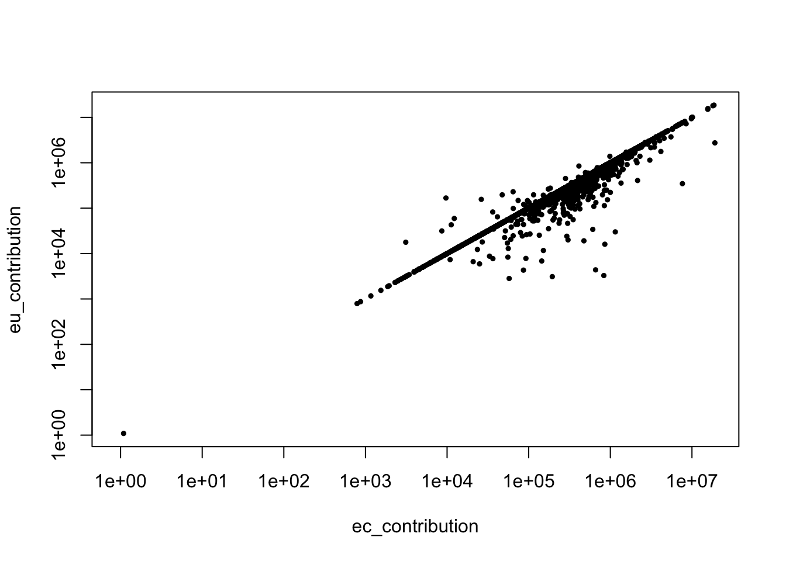
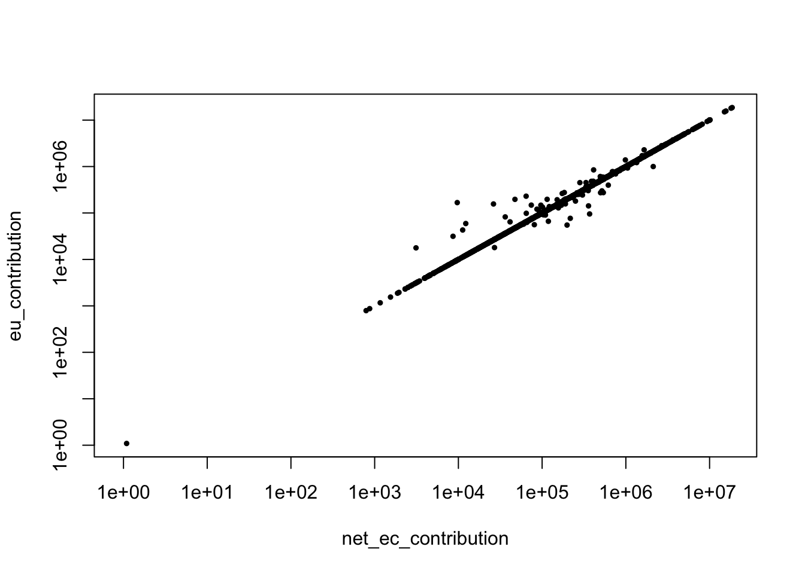

The raw data can be found on these websites:
Everyone ➜ FP7 Projects ➜
FP7 Project Details ➜
Top Funded ProjectsEveryone ➜ H2020 Projects ➜
H2020 Projects ➜ Top Funded ProjectsEveryone ➜ H2020 Projects ➜
Data Export ➜ Raw Data Export SheetThe Horizon
Dashboard consists of a Qlik Sense application. Raw data are used in
the official statistics of the European Commission but cannot be
downloaded automatically. However, certain datasets can still be
manually exported to xlsx files (see Sources above).
The EU produces snapshots of its publicly available data on the EU Data Portal. Data can be found for FP6, FP7, and H2020. For FP7 and H2020, the most recent data are stored in ZIP archives containing CSV files about projects and participants.
It is possible to download the data by hand or automatically. The following outlines how to download the data automatically with the command-line and the Wget command.
First, we create a text file, inst/url_list.txt, with
the list of URLs from which we would like to download the data
files.
https://cordis.europa.eu/data/FP6/cordis-fp6projects.csv
https://cordis.europa.eu/data/FP6/cordis-fp6organizations.csv
https://cordis.europa.eu/data/cordis-fp7projects-csv.zip
https://cordis.europa.eu/data/cordis-h2020projects-csv.zipSecond, we create a shell script,
inst/download_files.sh, which downloads the data files to
the data-raw/ folder.
#!/bin/bash
while read url; do
wget -P ../data-raw $url
done < ../inst/url_list.txtBesides, it is also possible to inspect when the files were last
updated. We do this by creating another shell script,
inst/last_updated.sh, which displays the
Last-Modidied information for each file.
#!/bin/bash
while read url; do
wget --server-response --spider $url 2>&1 | grep -i Last-Modified
done < ../inst/url_list.txtFALSE Last-Modified: Mon, 09 Mar 2020 14:18:14 GMT
FALSE Last-Modified: Mon, 09 Mar 2020 14:18:12 GMT
FALSE Last-Modified: Tue, 15 Mar 2022 09:07:32 GMT
FALSE Last-Modified: Tue, 15 Mar 2022 09:07:50 GMTTo finish, we extract the files from the ZIP archives. The unzip command fails to extract the files from the Zip archives. The most recent release contains a faulty Zip file structure. Fortunately, the tar command offers a workaround.
#!/bin/bash
tar -xvf data-raw/cordis-fp7projects-csv.zip
mkdir data-raw/fp7
mv csv data-raw/fp7
tar -xvf data-raw/cordis-h2020projects-csv.zip
mkdir data-raw/h2020
mv csv data-raw/h2020The first step is to load a few useful libraries and helper functions.
source(here::here("R", "package.r"))
source(here::here("R", "utils.r"))The data from the Horizon Dashboard only cover FP7 and H2020. The details about the projects are given in two tables, one per Framework Programme. Therefore, we select the matching columns to make it possible to merge the two tables.
matching_columns <- c(
"project_id",
"project_acronym",
"thematic_priority",
"topic_code",
"topic_description",
"participations"
)
fp7_dashboard <-
# import xlsx to data frame
here("data-raw", "fp7-projects.xlsx") %>%
read_excel(guess_max = 20000) %>%
# convert names to snake case
clean_names() %>%
# rename columns for consistency between tables
rename(
project_id = project_nbr,
thematic_priority = thematic_priority_descr) %>%
select(all_of(matching_columns)) %>%
# data frame label column
mutate(framework_programme = "FP7")
h2020_dashboard <-
# import xlsx to data frame
here("data-raw", "h2020-projects.xlsx") %>%
read_excel(guess_max = 20000) %>%
# convert names to snake case
clean_names() %>%
# rename columns for consistency between tables
rename(
project_id = project_nbr,
thematic_priority = thema,
participations = h2020_participations
) %>%
select(all_of(matching_columns)) %>%
# data frame label column
mutate(framework_programme = "H2020")
# merge the tables
projects_dashboard <- bind_rows(fp7_dashboard, h2020_dashboard)Details about the projects can also be found in the data downloaded from the Data Portal. Similarly to the Horizon Dashboard data, each Framework Programme has its own data table from which we select a few additional columns of interest.
additional_columns <- c(
"project_id",
"start_date",
"end_date",
"legal_basis",
"funding_scheme"
)
# use H2020 schema as reference
projects_cordis_h2020 <-
read_csv2(here("data-raw", "h2020", "csv", "project.csv")) %>%
# for data type consistency
mutate_if(is.POSIXct, as.Date)
projects_cordis_fp7 <-
readr::read_csv2(here("data-raw", "fp7", "csv", "project.csv")) %>%
# for data type consistency
mutate(
contentUpdateDate = as.Date(contentUpdateDate),
ecSignatureDate = as.Date(ecSignatureDate),
masterCall = as.character(masterCall))
projects_cordis <- bind_rows(projects_cordis_fp7, projects_cordis_h2020) %>%
# use snake case
clean_names() %>%
# rename columns for consistency between tables
rename(project_id = id) %>%
select(all_of(additional_columns))Finally, we combine the details from the Horizon Dashboard and the Data Portal.
projects <- full_join(projects_dashboard, projects_cordis, by = "project_id")For completeness, we also include the code which reads the data available for FP6. As indicated already, the Horizon Dashboard contains no data for FP6. Moreover, the Data Portal only provides contribution amounts for 2,621 cases (out of 75,241). The data from FP6 will therefore be ignored in the remainder of this work.
# FP6 project details
projects_cordis_fp6 <-
here("data-raw", "cordis-fp6projects.csv") %>%
readr::read_csv2() %>%
clean_names()
# FP6 participation/contribution details
organizations_cordis_fp6 <-
here("data-raw", "cordis-fp6organizations.csv") %>%
read_tsv() # beware: tsv, not csvHorizon Dashboard only includes participation data for H2020 and not for FP7. Nevertheless, the data in the Horizon Dashboard appear to be of a higher quality than that of the Data Portal and are therefore used as a source of official statistics.
First, we save the data to CSV.
organizations_dashboard_h2020 <-
here("data-raw", "horizon2020.xlsx") %>%
read_excel() %>%
clean_names() %>%
rename(project_id = project_nbr,
pic = general_pic)
# add call year
organizations_dashboard_h2020 <- organizations_dashboard_h2020 %>%
mutate(
call_date = as.Date(call_deadline_date, "%d/%m/%Y"),
call_year = format(call_date, "%Y")
) %>%
select(-call_date)
# store data types
map_chr(organizations_dashboard_h2020, class) %>%
write_yaml(here("data", "schema-dashboard_export.yml"))
# split data frame by call year
yrs <- organizations_dashboard_h2020 %>%
distinct(call_year) %>%
pull() %>% sort()
file_names <- here("data", glue("dashboard-export-{yrs}.csv"))
organizations_dashboard_h2020 %>%
arrange(call_year) %>%
group_by(call_year) %>%
group_split() %>%
setNames(yrs) %>%
# write to ./data
walk2(file_names, vroom_write, delim = ",")And select a few columns of interest.
additional_columns <- c(
"project_id",
"pic",
"partner_role",
"pillar_abbr",
"pillar_descr",
"thematic_priority_abbr",
"signature_date",
"call_deadline_date",
"eu_contribution")
organizations_dashboard_h2020 <- organizations_dashboard_h2020 %>%
select(all_of(additional_columns))Details about participation can be found in the organization.csv tables.
non_matching_columns <- c(
"contentUpdateDate",
"SME",
"nutsCode",
"endOfParticipation",
"active",
"totalCost",
"rcn"
)
selection_columns <- c(
"project_id",
"pic",
"legal_name",
"legal_short_name",
"legal_entity_type",
"country_code",
"legal_url",
"partner_role",
"ec_contribution",
"net_ec_contribution"
)
organizations_cordis_h2020 <-
here("data-raw", "h2020", "csv", "organization.csv") %>%
read_csv2(guess_max = 100000) %>%
select(-all_of(non_matching_columns))
organizations_cordis_fp7 <-
here("data-raw", "fp7", "csv", "organization.csv") %>%
read_csv2(guess_max = 130000) %>%
select(-all_of(non_matching_columns))
# 3 cases where (project_id, pic)
# appear 2x w/ different partner_role
organizations_cordis <-
organizations_cordis_fp7 %>%
bind_rows(organizations_cordis_h2020) %>%
clean_names() %>%
rename(
pic = organisation_id,
legal_name = name,
legal_short_name = short_name,
legal_entity_type = activity_type,
country_code = country,
legal_url = organization_url,
partner_role = role
) %>%
select(all_of(selection_columns))Here again, we combine the details from the Horizon Dashboard and the Data Portal.
organizations <- organizations_dashboard_h2020 %>%
mutate(partner_role = str_to_lower(partner_role)) %>% # for joining
full_join(organizations_cordis,
by = c("project_id", "pic", "partner_role")
)Having combined the datasets from the Horizon Dashboard and the Data
Portal, we obtain three columns with details about funding
contributions: ec_contribution (Data Portal),
net_ec_contribution (Data Portal), and
eu_contribution (Horizon Dashboard). The latter comprises
the values of the Commission’s official statistics for H2020.
eu_contribution is nevertheless only available for H2020.
To extrapolate to FP7 statistics, we are going to compare the columns
ec_contribution and net_ec_contribution with
eu_contribution.
# take a sample of 10'000 observations
df_sample <- organizations %>%
filter(!is.na(eu_contribution)) %>%
filter(!is.na(ec_contribution)) %>%
filter(!is.na(net_ec_contribution)) %>%
select(ends_with("contribution")) %>%
mutate(ec_contribution = str_replace(ec_contribution, ",", ".")) %>%
mutate_all(as.numeric) %>%
sample_n(10000)
# comparing `ec_contribution` with `eu_contribution`
with(
df_sample,
plot(
ec_contribution,
eu_contribution,
type = "p",
pch = 19,
cex = .5,
log = "xy"
)
)
# comparing `net_ec_contribution` with `eu_contribution`
with(
df_sample,
plot(
net_ec_contribution,
eu_contribution,
type = "p",
pch = 19,
cex = .5,
log = "xy"
)
)
In addition, comparing of the number of projects between the
projects table and the organizations table
shows that twenty four projects lack details about individual funding
contributions.
anti_join(organizations, projects, by = "project_id")FALSE # A tibble: 0 × 16
FALSE # … with 16 variables: project_id <dbl>, pic <dbl>, partner_role <chr>,
FALSE # pillar_abbr <chr>, pillar_descr <chr>, thematic_priority_abbr <chr>,
FALSE # signature_date <chr>, call_deadline_date <chr>, eu_contribution <chr>,
FALSE # legal_name <chr>, legal_short_name <chr>, legal_entity_type <chr>,
FALSE # country_code <chr>, legal_url <chr>, ec_contribution <chr>,
FALSE # net_ec_contribution <chr>anti_join(projects, organizations, by = "project_id")FALSE # A tibble: 24 × 11
FALSE project_id project_acronym thematic_priority topic_code topic_descripti…
FALSE <dbl> <chr> <chr> <chr> <chr>
FALSE 1 100208 ACROSS Joint Technology … SP1-JTI-A… Computing envir…
FALSE 2 100265 ASAM Joint Technology … SP1-JTI-A… Computing envir…
FALSE 3 100008 CAMMI Joint Technology … SP1-JTI-A… Human-centric d…
FALSE 4 100022 CHESS Joint Technology … SP1-JTI-A… Methods and pro…
FALSE 5 100039 CHARTER Joint Technology … SP1-JTI-A… Methods and pro…
FALSE 6 100228 CHIRON Joint Technology … SP1-JTI-A… Person-centric …
FALSE 7 269985 GOLDFISH - ENLARGED Information and C… ICT-2009.… International C…
FALSE 8 100223 ESONIA Joint Technology … SP1-JTI-A… Efficient manuf…
FALSE 9 100012 EDIANA Joint Technology … SP1-JTI-A… Embedded techno…
FALSE 10 100203 IFEST Joint Technology … SP1-JTI-A… Computing envir…
FALSE # … with 14 more rows, and 6 more variables: participations <dbl>,
FALSE # framework_programme <chr>, start_date <date>, end_date <date>,
FALSE # legal_basis <chr>, funding_scheme <chr># => 24 projects with no participation details
master_view <- organizations %>%
left_join(projects, by = "project_id")Below are a few steps to clean up and improve the data.
country_code and add the corresponding country
names.# EU Data Portal country codes
country_codes <-
glue(
"https://cordis.europa.eu/",
"data/reference/",
"cordisref-countries.csv") %>%
read_csv2() %>%
clean_names() %>%
filter(language == "en") %>%
select(eu_code, name) %>%
rename(
country_code = eu_code, # two-letter Eurostat country code
country = name)
master_view <- master_view %>%
mutate(
country_code = str_sub(country_code, 1, 2), # two-letter only
country_code = str_replace(country_code, "KO", "XK")) %>%
left_join(country_codes, by = "country_code")legal_entity_type.master_view <- master_view %>%
# `legal_entity_type` is a three-letter label only
mutate(legal_entity_type = str_sub(legal_entity_type, 1, 3))master_view <- master_view %>%
mutate(
ec_contribution = str_replace(ec_contribution, ",", "."),
ec_contribution = str_replace(ec_contribution,
fixed("xxxxx"),
NA_character_),
eu_contribution = str_replace(eu_contribution, fixed("-"), "0"),
ec_contribution = as.numeric(ec_contribution),
net_ec_contribution = as.numeric(net_ec_contribution),
eu_contribution = as.numeric(eu_contribution),
# reconcile FP7 and H2020 contribution data
re_contribution = eu_contribution,
re_contribution = if_else(is.na(re_contribution),
net_ec_contribution,
re_contribution),
re_contribution = if_else(is.na(re_contribution),
ec_contribution,
re_contribution)
)master_view <- master_view %>%
mutate(
pillar = str_extract(pillar_abbr, "\\d"),
pillar = if_else(pillar_abbr == "EU.0.", "Cross-theme", pillar),
pillar = if_else(pillar_abbr == "Euratom", pillar_abbr, pillar))master_view <- master_view %>%
mutate(
signature_date = as.Date(signature_date, format = "%d/%m/%Y"),
call_deadline_date = as.Date(call_deadline_date, format = "%d/%m/%Y"),
signature_year = str_sub(signature_date, 1, 4),
call_year = str_sub(call_deadline_date, 1, 4),
start_year = str_sub(start_date, 1, 4),
signature_year = int(signature_year),
call_year = int(call_year),
start_year = int(start_year)
)partner_role to title case.master_view <- master_view %>%
mutate(partner_role = str_to_title(partner_role))Finally, we can save master_vier as a CSV file, which
can be viewed in here.
# store data types
master_view %>%
map_chr(class) %>%
write_yaml(here("data", "schema-cordis-plus.yml"))
# split CSVs by year
df_years <-
master_view %>%
distinct(start_year) %>%
pull() %>%
sort()
# write to ./data
file_names <- here("data", glue("cordis-plus-{df_years}.csv"))
master_view %>%
filter(!is.na(start_date)) %>%
arrange(start_year) %>%
group_by(start_year) %>%
group_split() %>%
setNames(df_years) %>%
walk2(file_names, vroom_write, delim = ",")